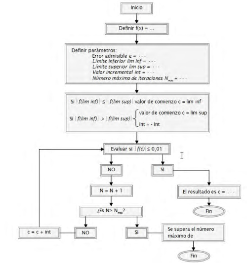

Ejemplo de búsqueda de soluciones a un problema con iteración
objetivo
condicionantes
método
Problema con resolución directa
Problema con iteración para búsqueda de soluciones
"proceso circular" o bucle
1. Se detectan datos de entrada inductores de bucle infinito.
2. El número de iteraciones supera el valor que se ha fijado como aceptable.
3. El tiempo empleado en iteraciones supera el valor que se ha fijado como aceptable.
4. Se detecta que la solución está tendiendo a más o menos infinito.
5. Solución se sale del rango previsto o deseado.
Objetivo: Buscar el valor de x que siendo un número real positivo hace f(x) = 5x2 - 3x - 4 igual a cero de acuerdo con estas reglas.
1. Se admite la desviación de f(x) respecto al valor pedido de ± 0'01.
2. Hemos perdido toda nuestra memoria: no se admite el uso de fórmulas o estrategias de resolución
gráficas o analáticas: debemos basarnos en un tanteo puro ordenado (no aleatorio) y constante.
3. Se sabe que la solución está entre 1 y 10, debiendo comenzar la búsqueda por uno de estos dos extremos.
Se pide: definir el esquema de búsqueda limitando el número máximo de iteraciones.
Datos iníciales ------Sucesivas evaluaciones de f(x)-----Fin por obtener resultado
o por superar número máximo de iteraciones
Datos:
* f(x) = ax2 + bx + c , función.
* e , error admisible.
* lim inf , límite inferior del intervalo de búsqueda.
* lim sup , límite superior del intervalo de búsqueda.
* int , valor incremental para cada tanteo.
* Nmax , número máximo de iteraciones.
* Trataremos de barrer todo el intervalo de búsqueda.
* Trataremos de no superar las 104 iteraciones.
* En nuestro caso el intervalo de búsqueda comprende 10 - 1 = 9 enteros.
* Cerraremos el asunto estableciendo: int = ± 0,001 ; Nmax = 9000
Pasemos ahora al procedimiento.
Evaluaremos la imagen del punto inicial y si resulta inferior o igual al valor
admisible e, daremos por resuelto el problema. En caso contrario, evaluaremos si hemos llegado al
número máximo de iteraciones, y si no es así, volveremos a repetir el proceso para un valor a evaluar
igual al anterior más el intervalo de búsqueda. Por último haremos este esquema reflejo de todo lo
anterior.
